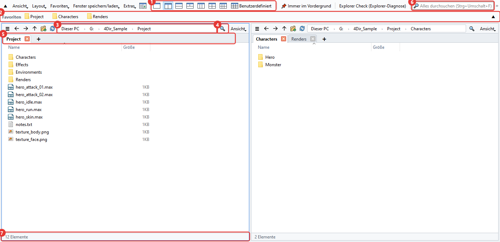
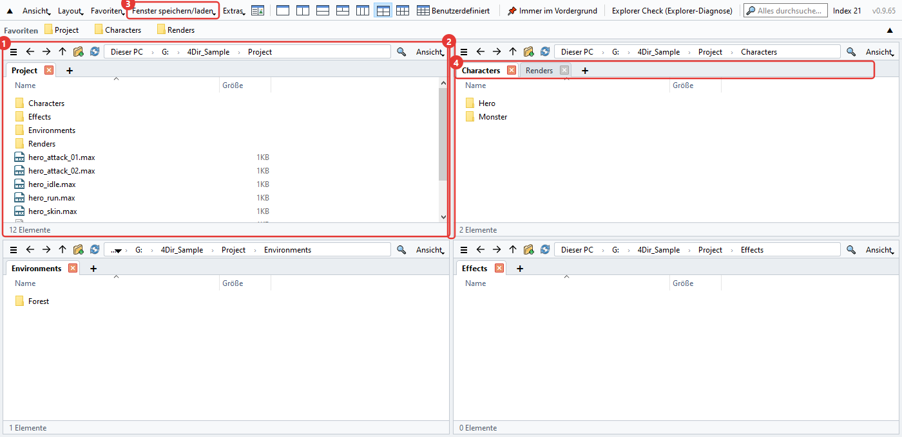
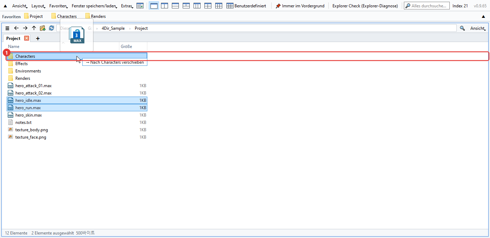
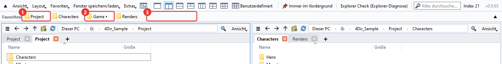
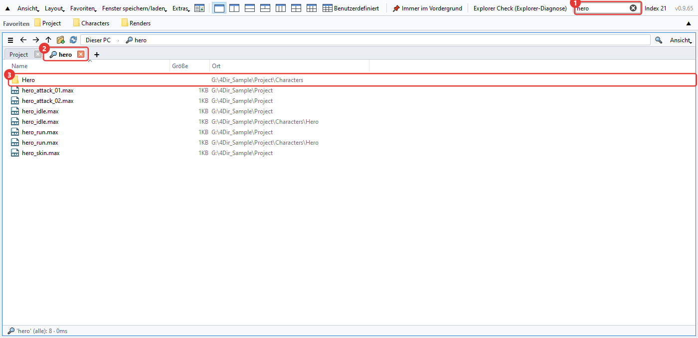
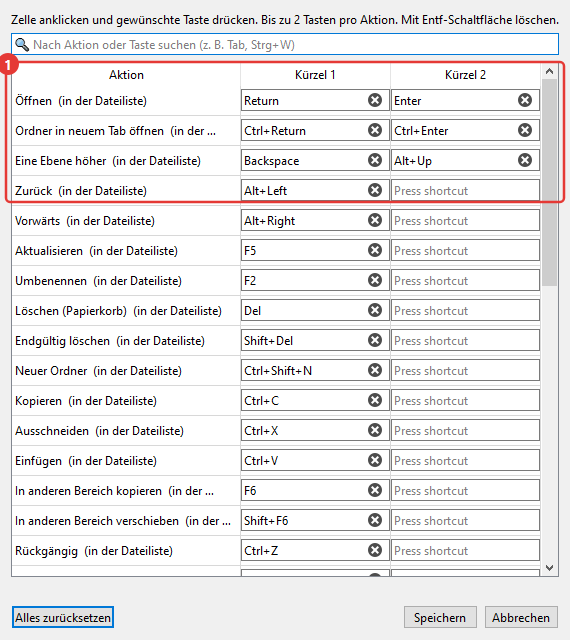
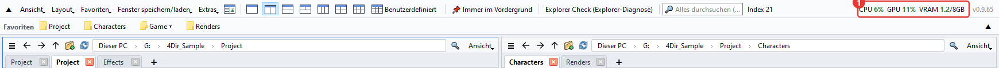
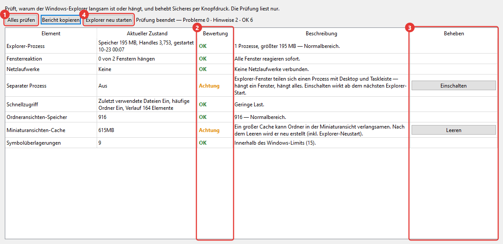

4Dir – Anleitung
Hier steht das, was man am häufigsten braucht, ungefähr in der Reihenfolge, in der man es braucht. Die roten Zahlen in den Bildern passen zu den Zahlen im Text. Die Tastenkürzel sind fast dieselben wie im Windows-Explorer. Wer den Explorer kennt, weiß also schon gut die Hälfte.
Das Hauptfenster
Mit 4Dir haben Sie mehrere Ordner nebeneinander in einem Fenster offen. Von oben nach unten:

- Layout-Schaltflächen. 1, 2, 3, 4 und 6 Bereiche mit einem Klick. Mit der letzten, Benutzerdefiniert, legen Sie Spalten und Zeilen frei fest (bis 5×4).
- Favoritenleiste. Ziehen Sie einen oft genutzten Ordner hierher, dann wird daraus eine Schaltfläche. Per Rechtsklick können Sie sie umbenennen oder entfernen.
- Adressleiste. Ein Klick auf einen Teil des Pfads springt direkt in diesen Ordner. Ein Klick in den freien Bereich rechts schaltet auf Texteingabe um.
- Filter. Filtert den aktuellen Ordner nach Namen. Ctrl+F
- Tabs. Jeder Bereich hat eigene Tabs. Öffnen mit + oder Ctrl+T, schließen mit Ctrl+W.
- Alles durchsuchen. Sucht Dateinamen auf ganzen Laufwerken. Mehr dazu unten unter „Suchen“.
- Statusleiste. Zeigt die Anzahl der Elemente sowie Anzahl und Größe der ausgewählten.
Bereiche und Tabs
Jeder Bereich ist im Grunde ein kleiner Explorer und merkt sich seine eigenen Tabs und Ordner.

- Der zuletzt angeklickte Bereich bekommt einen blauen Rahmen. Tastenkürzel wirken auf diesen Bereich.
- Ziehen Sie an der Grenze zwischen zwei Bereichen, um die Größe zu ändern.
- Unter Fenster speichern/laden können Sie die aktuelle Aufteilung samt Tabs unter einem Namen speichern. Eine pro Projekt ist praktisch.
- Tabs lassen sich per Ziehen umsortieren oder in einen anderen Bereich verschieben. Lassen Sie einen Tab außerhalb des Fensters los, wird daraus ein neues Fenster. Per Rechtsklick können Sie ihn auch im Windows-Explorer öffnen.
Wenn Sie 4Dir schließen und wieder öffnen, sind die letzten Bereiche und Tabs wieder da. Starten Sie den PC neu, während 4Dir offen ist, öffnet es sich bei der nächsten Anmeldung wieder (lässt sich im Menü Extras abschalten).
Dateien verschieben und kopieren
Wie im Explorer. Beim Ziehen wird der Zielordner hervorgehoben, und daneben steht etwa „→ Nach … verschieben“, damit Sie vorher sehen, was passiert.

- Zielordner. Auf demselben Laufwerk wird verschoben, auf einem anderen kopiert. Mit Ctrl beim Loslassen wird kopiert, mit Shift verschoben.
Bei mehreren Bereichen müssen Sie gar nicht ziehen. Auswählen und F6 drücken kopiert in den anderen Bereich, Shift+F6 verschiebt.
Vertan? Ctrl+Z macht Umbenennen, neue Ordner, Verschieben, Kopieren und Löschen in den Papierkorb Schritt für Schritt rückgängig.
Drücken Sie beim Umbenennen mit F2 die Taste ↓, geht es direkt mit der nächsten Datei weiter. Mehrere Dateien auswählen und F2 drücken öffnet das Fenster Stapelumbenennung.
Das Kontextmenü ist das normale Windows-Menü. Einträge von Packprogrammen oder TortoiseSVN erscheinen also wie im Explorer.
Rechtsklick auf ein .webp-Bild → WebP konvertieren → Als PNG speichern / Als JPG speichern. Im selben Ordner entsteht eine neue Datei, das Original bleibt (lösch es selbst, wenn du es nicht brauchst). Mehrere Dateien auf einmal gehen auch.
Favoriten
Oft genutzte Ordner legen Sie als Schaltflächen in die Leiste oben. Am Anfang ist sie leer und zeigt nur, was Sie selbst hinzufügen (unabhängig vom Schnellzugriff des Windows-Explorers).

- Favoriten-Schaltfläche. Ein Klick öffnet den Ordner im aktuellen Bereich. Per Rechtsklick gibt es In neuem Tab öffnen, Umbenennen und Löschen. Ziehen Sie Dateien auf eine Schaltfläche, werden sie in diesen Ordner verschoben oder kopiert.
- Gruppen-Schaltfläche (▾). Fasst mehrere Favoriten unter einer Schaltfläche zusammen. Ein Klick klappt die Liste auf. Lassen Sie einen Ordner mitten auf einer Gruppen-Schaltfläche los, landet er in dieser Gruppe.
- Lassen Sie einen Ordner auf einer freien Stelle oder zwischen zwei Schaltflächen los, entsteht genau dort eine neue. Die Reihenfolge ändern Sie durch Ziehen. Den aktuellen Ordner fügen Sie mit Ctrl+D direkt hinzu.
Gibt es viel aufzuräumen, öffnen Sie Favoriten → Favoriten organisieren. Mehrere auf einmal löschen, Reihenfolge und Namen ändern, Gruppen anlegen und nicht mehr vorhandene Ordner finden – alles in einem Fenster. Übernommen wird erst mit Bestätigen.
Passen die Schaltflächen nicht in eine Zeile, klicken Sie auf ▼ am rechten Ende der Leiste. Sie klappt dann auf mehrere Zeilen auf und zeigt alles (▲ macht wieder eine Zeile daraus).
Wenn Sie die im Windows-Explorer angehefteten Ordner übernehmen möchten: Favoriten → Schnellzugriff des Windows-Explorers importieren. Bereits vorhandene werden übersprungen.
Suchen
Tippen Sie oben ins Suchfeld, und die Suche läuft sofort. Beim ersten Start legt 4Dir einmal eine Liste der Dateinamen auf den Laufwerken an und verfolgt danach nur noch die Änderungen. Deshalb ist es schnell.

- Suchfeld. Bei mehreren Wörtern kommen nur Namen, die alle enthalten. Platzhalter wie
*.maxgehen auch. Ctrl+Shift+F - Die Ergebnisse öffnen sich in einem Tab mit Lupe.
- Die Spalte „Ort“ ist der Ordner, in dem die Datei liegt. Doppelklick öffnet sie, Rechtsklick → Dateispeicherort öffnen wechselt in diesen Ordner.
Welche Laufwerke durchsucht werden, legen Sie unter Extras → Suchbereich fest. Netzlaufwerke sind anfangs aus.
Ist die Liste noch nicht fertig oder liegt der Ordner außerhalb des Suchbereichs, durchsucht die Pfeil-Schaltfläche neben dem Filterfeld direkt alles unterhalb des aktuellen Ordners.
Wenn Sie SVN nutzen
Liegt Ihr Arbeitsordner unter SVN, bekommen Dateien und Ordner Statussymbole. Ist TortoiseSVN installiert, sind es dieselben Symbole wie im Explorer.

- Grüner Haken: unverändert. Bei Ordnern zählt der gesamte Inhalt.
- Rotes Ausrufezeichen: geändert. Bei einem Ordner heißt das, dass irgendwo darin noch nicht committete Änderungen sind.
- Blaues Plus: zum Hinzufügen vorgemerkt (noch nicht committet).
- Graues Fragezeichen: nicht unter Versionskontrolle.
Die Schaltflächen in der Favoritenleiste bekommen dieselben Symbole. So sehen Sie schon oben, welche Ordner noch nicht committet sind.
Große Arbeitskopien brauchen beim ersten Mal ein paar Sekunden. Solange steht in der Statusleiste „SVN wird geprüft“. Brauchen Sie die Symbole nicht, schalten Sie Ansicht → Einblenden → SVN-Status anzeigen aus.
Tastenkürzel ändern
Unter Extras → Tastenkürzel legen Sie für jede Funktion die gewünschte Taste fest. Pro Funktion sind bis zu zwei Tasten möglich.

- Feld anklicken und die gewünschte Taste drücken, dann ist sie sofort geändert. Ist die Taste schon belegt, bekommen Sie einen Hinweis.
Die wichtigsten: Ctrl+T neuer Tab, Ctrl+W Tab schließen, Ctrl+N neues Fenster, Ctrl+L Adressleiste, Ctrl+Shift+C Pfad kopieren, Alt+Enter Eigenschaften.
CPU- und GPU-Auslastung
Gedacht, um zu sehen, wie ausgelastet der PC ist, während 3ds Max rendert oder ein Spiel läuft. Die Zahlen stehen rechts in der oberen Leiste.

- CPU: Auslastung des ganzen PCs. GPU: Auslastung der Grafikkarte. VRAM: belegter/gesamter Grafikspeicher (GB). Über 60 % wird die Anzeige orange, über 85 % rot. Sie aktualisiert sich alle 1,5 Sekunden, und mit der Maus darüber sehen Sie den Namen der Grafikkarte.
GPU und VRAM gibt es nur bei NVIDIA-Grafikkarten. Bei anderen sehen Sie nur die CPU.
Der Arbeitsspeicher (RAM) wird nicht angezeigt. Dafür gibt es den Task-Manager (Ctrl+Shift+Esc).
Ausschalten: Ansicht → CPU-/GPU-Auslastung anzeigen. Ist das Fenster minimiert, wird auch nicht aktualisiert. In einem schmalen Fenster rutscht die Anzeige in » am Ende der Menüleiste.
Explorer-Diagnose (Explorer Check)
Ein Werkzeug für den Fall, dass der Windows-Explorer oft hängt oder langsam ist. Sie öffnen es über Explorer Check (Explorer-Diagnose) in der oberen Leiste oder über das Menü Extras. Die Prüfung startet sofort und liest nur, sie ändert nichts.

- Alles prüfen: prüft noch einmal. Angeschaut werden unter anderem Speicher des Explorers, Reaktion der Fenster, Netzlaufwerke, eigener Prozess für Ordnerfenster, zuletzt verwendete Elemente, gespeicherte Ordneransichten, Miniaturansichten-Cache, Anzahl der Overlay-Symbole und kürzliche Abstürze.
- Ergebnis: OK / Achtung / Problem / Info. In der Spalte daneben steht der Grund.
- Lösen-Schaltfläche. Gibt es nur bei Punkten, die sich beheben lassen. Sie fragt vorher noch einmal nach und sagt, was geändert wird, und betrifft nur die Einstellungen und Ordner des aktuellen Benutzers.
- Explorer neu starten: beendet den Explorer und startet ihn neu, wenn er hängt. Offene Explorer-Fenster werden dabei geschlossen.
Mit Bericht kopieren kopieren Sie das Ergebnis als Text. Wenn Sie uns ein Problem melden, schicken Sie es gleich mit, dann finden wir die Ursache schneller.
Sonstiges
- Hell/dunkel und die Sprache finden Sie im Menü Ansicht. Die Sprache wechselt nach einem Neustart von 4Dir.
- Wenn sich 4Dir seltsam verhält, klicken Sie auf Extras → Protokoll für Fehlerbericht speichern und schicken Sie die erstellte ZIP-Datei an support@4dir.net. Anhand des Protokolls suchen wir die Ursache.